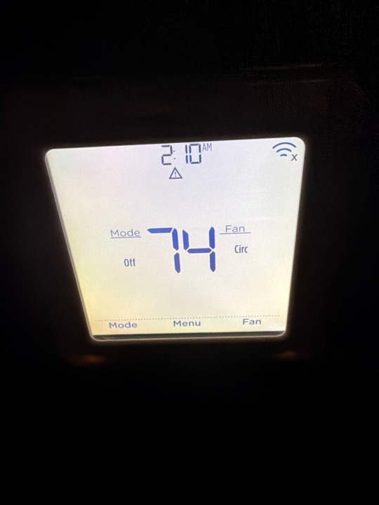
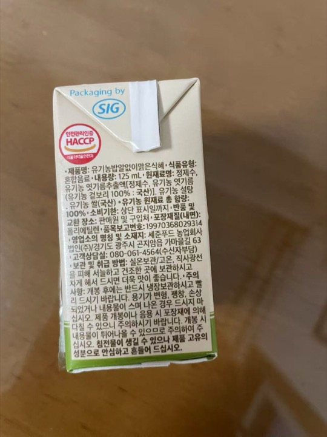
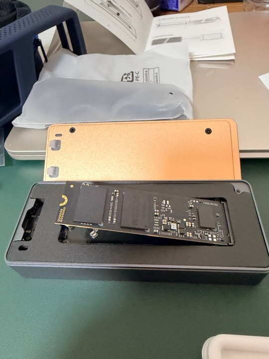
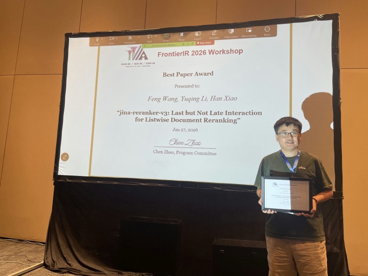
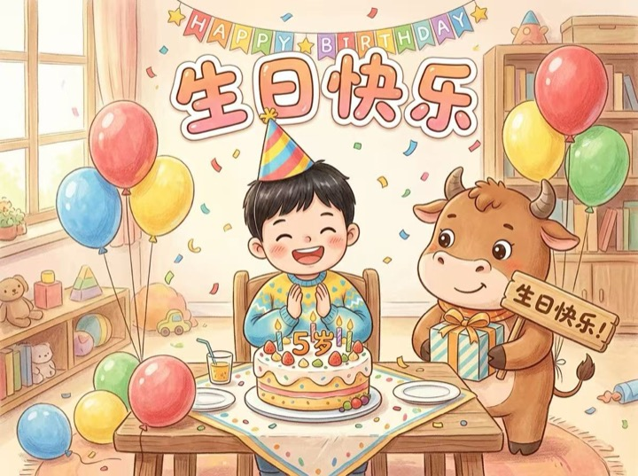

Training-free, open-vocabulary tagging from a frozen embedding model.









Image and text embedding space.

vision tower
2×2 merge
text tower
image-token positions
Both paths end in the same space, so \( \langle p,\,e_\ell\rangle \) is well-defined: any patch of any image, scored against any word the model knows.
Multi-crop re-encoding.
Class-Wise Reranking (CWR), the crop-and-rescore idea from TagCLIP (AAAI’24), extended to a full-coverage grid of 14 crops (overlaid right) through the same frozen model. A crop is a new input image, itself re-patchified by the tower; a small object fills whichever crop contains it, so weak signal becomes strong.
\[ S_\ell=\tilde s_\ell+1.3\big(\max_{c=1..14} s_{c,\ell}-\mu_\ell\big),\qquad s_{c,\ell}=\max\!\big(\max_{p\in P_c}\langle p,e_\ell\rangle,\;\langle g_c,e_\ell\rangle\big) \]
BPer-label max, not averaging: averaging hurt. The outlier crop is the evidence.

multi-crop re-encoding corrects the single-pass misreading
Every tag is a single word.
Can more test-time compute turn a single-word tag into a grounded noun phrase? no POS tagger, no grammar, no new model — only the frozen encoder
On-device deployment in Omni.
The Python study became a feature of Omni, a native on-device semantic-search app (Swift + MLX, same frozen model). The port reuses the architecture directly:
tag chips as they appear in results; the third row is a video segment